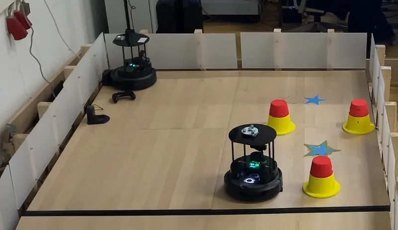

Writing & learning.
My latest Medium articles on ROS 2, deployment, and the lessons learned from building and operating robots.
Latest articles on Medium

The Complete Guide to Podman for ROS 2 (2026 Edition): From Zero to Production-Ready Robotics
It usually starts with the same promise: this time the robotics environment will stay clean.
Read on Medium
The Complete Guide to Docker for ROS 2 (2026 Edition): From Zero to Production-Ready Robotics
A robot works perfectly on a developer laptop, the demo looks clean, the nodes talk to each other, RViz opens, and confidence is high. Then the software gets pushed to another machine, a…
Read on Medium
Docker on NVIDIA Jetson Orin: The Right Docker Base Image for Reliable Robots
Not dev kits on a lab bench. Actual robots that move and interact in messy environments, with customers expecting them to work 24/7. In that context, every “small” technical decision…
Read on Medium
What Is NVIDIA L4T Base, and Why Matters for Robotics on Jetson
But what exactly is l4t-base? And why does it matter so much for robotics software, perception stacks, and containerized autonomy?
Read on Medium
Faster ROS2 development with Pixi
Let me be fair. Docker dev containers were a genuine step forward. Before them, onboarding a new engineer to a ROS 2 project meant pointing them to a 10-page wiki and hoping for the…
Read on Medium
Managing Multi-Robot Fleets
Fleet management is not about making one robot work. It is about making many robots behave in a predictable, repeatable, and observable way. That sounds simple, but in practice it is…
Read on Medium
A Robot Demo Day That Broke My Heart (And How It Changed My Deployment Strategy)
We were about to run a high-stakes demo for a multi-robot research project. Three autonomous robots were supposed to execute a perfectly coordinated logistics sequence. During the dry…
Read on MediumNo matching stories.
Try another topic or search term.
More writing on LinkedIn
- Open source tools in Robot DevOps pipeline Tooling across the robot software delivery lifecycle · LinkedIn
- Continuous Integration and Deployment in Robotics CI/CD practices for robotics teams · LinkedIn
- Deploying ROS2 packages using Ansible Automating ROS 2 deployments · LinkedIn
Watch my ROSCon India 2023 talk
Robotair · Tech talk at ROSCon India 2023
I shared my work on robotics DevOps and Robotair with the ROSCon India community, drawing on the challenges of taking ROS software into production.
Watch the talk on YouTube